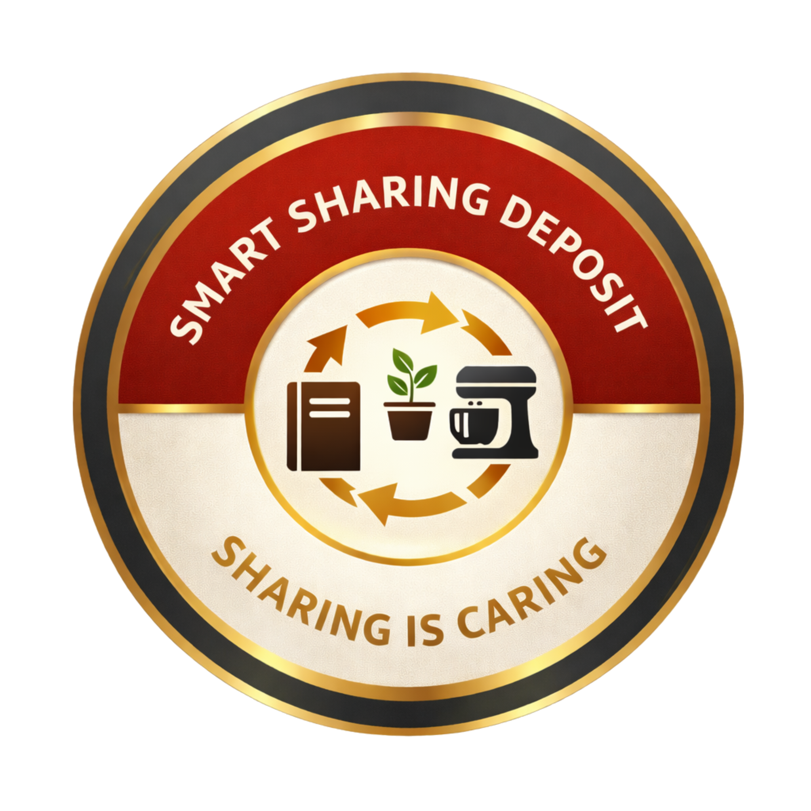

"Sharing is Caring"

Fidèles aux directives de 1963, nous considérons l'échange de savoir non comme un simple outil utilitaire, mais comme un véritable facteur de culture et un stimulant pour l'innovation technologique.
De l'archivage rigoureux du patrimoine éducatif tunisien à la mise en place de protocoles de dépôt distribués, notre infrastructure unifie l'histoire et le futur du partage numérique.